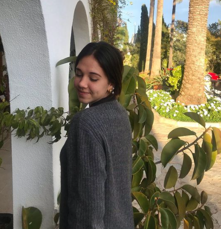
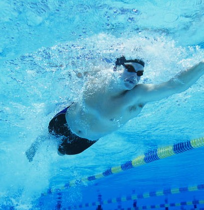
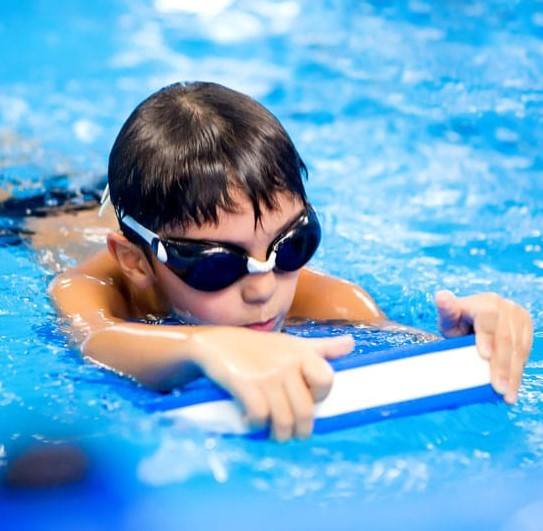
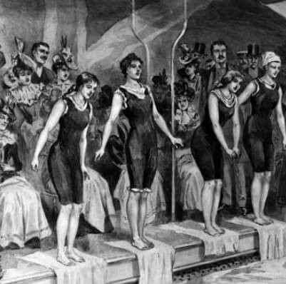

Andrea Oliver
Nuestra última incorporación a nuestro equipo de entrenadores ha sido Andrea Oliver. Antigua nadadora del Club Natación Palma, con grandes habilidades de enseñanza a niños pequeños (1-10 años)
Nuestra última incorporación a nuestro equipo de entrenadores ha sido Andrea Oliver. Antigua nadadora del Club Natación Palma, con grandes habilidades de enseñanza a niños pequeños (1-10 años)
Exnadador del Club Natación Voltor Balear, Club Natacion Palma y Stirling Swimming. Medallista en campeonatos de Baleares y poseedor de la titulación de deportista de élite.
Fundador de la empresa y actual nadador de University Of Stirling y del Club Natación Palma. Medallista en campeonatos del Reino Unido, campeonatos de España y de Baleares.
Exnadadora de los clubes Voltor Balear, Club Natación Palma y Mastbal. Fundadora de nuestra empresa y participante en 7 campeonatos de España.
Puedes contactar con nuestro equipo de entrenadores sin compromiso y lo puedes hacer de dos formas..:
1. Contactar directamente con el entrenador que cree que mejor se adapta a sus necesidades desde el apartado TRAINERS.
2. Contactar directamente con nosotros a través de los siguientes enlaces..
Sobre los servicios que les ofrecemos
En nuestra empresa contamos con un conjunto de entrenadores que son o fueron nadadores de élite, sea de forma nacional o internacional. Dichos entrenadores tendran el placer de enseñar a sus nadadores a nadar o a obtener una mejor forma de nado.
Como se creo Swimming Coach y quienes somos.
En el verano de 2019, Tony Joe Trett Oliver y Aina Palmer Mora, empezaron a hacer clases privadas dirigidas a niños, para así poder transmitir su amor hacia la natación. Pocos meses después, al ver que necesitaban debido a que les reclamaban muchas familias para impartir clases individuales, decidieron pedir ayuda a varios amigos suyos que tuvieran ese mismo amor hacia la natación.